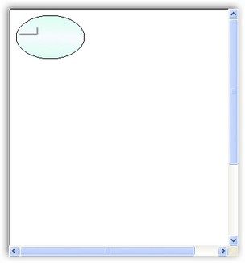
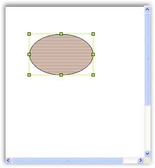
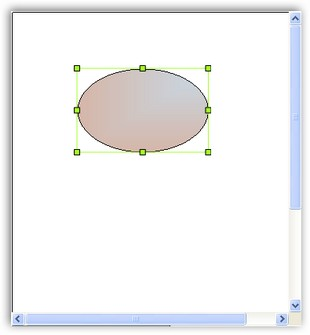

The following are the Size events of the DiagramWebControl.
|
DocumentEventSink |
Description |
|
SizeChanged |
Gets fired after the size of the node has been changed. |
|
SizeChanging |
Gets fired when the size of the node is changed. |
Data is retrieved or set by using the following members of the Size events.
|
Size EventArgs Member |
Description |
|
Cancel |
Cancels the Vertex Changed event from being fired. |
|
NodeAffected |
Returns the node's name by which the node was affected. |
|
RotationOffset |
Returns the angle by which the node was changed. |
The following code example illustrates the usage of the Size events.
|
[C#]
public void Form1_Load(object sender, EventArgs e) { DiagramWebControl1.Model.EventSink.SizeChanged += new SizeChangedEventHandler(EventSink_SizeChanged); DiagramWebControl1.Model.EventSink.SizeChanging += new SizeChangingEventHandler(EventSink_SizeChanging); Syncfusion.Windows.Forms.Diagram.Ellipse ellipse = new Syncfusion.Windows.Forms.Diagram.Ellipse(10, 10, 110, 70); DiagramWebControl1.Model.AppendChild(ellipse); }
void EventSink_SizeChanged(SizeChangedEventArgs evtArgs) { ellipse.FillStyle.Color = System.Drawing.Color.Sienna; ellipse.FillStyle.ColorAlphaFactor = 100; ellipse.FillStyle.ForeColor = System.Drawing.Color.SteelBlue; ellipse.FillStyle.ForeColorAlphaFactor = 70; ellipse.FillStyle.Type = FillStyleType.PathGradient; ellipse.FillStyle.PathBrushStyle = PathGradientBrushStyle.RectangleRightTop; ellipse.FillStyle.Type = FillStyleType.PathGradient; ellipse.FillStyle.GradientAngle = 95; ellipse.FillStyle.GradientCenter = 0.5f; }
void EventSink_SizeChanging(SizeChangingEventArgs evtArgs) { ellipse.FillStyle.Color = System.Drawing.Color.SaddleBrown; ellipse.FillStyle.ColorAlphaFactor = 100; ellipse.FillStyle.ForeColor = System.Drawing.Color.SteelBlue; ellipse.FillStyle.ForeColorAlphaFactor = 70; ellipse.FillStyle.Type = FillStyleType.PathGradient; ellipse.FillStyle.PathBrushStyle = PathGradientBrushStyle.RectangleLeftBottom; ellipse.FillStyle.Type = FillStyleType.Hatch; ellipse.FillStyle.GradientAngle = 95; ellipse.FillStyle.GradientCenter = 0.5f; } |

Figure 68: Before Size Changing

Figure 69: SizeChanging Event

Figure 70: SizeChanged Event